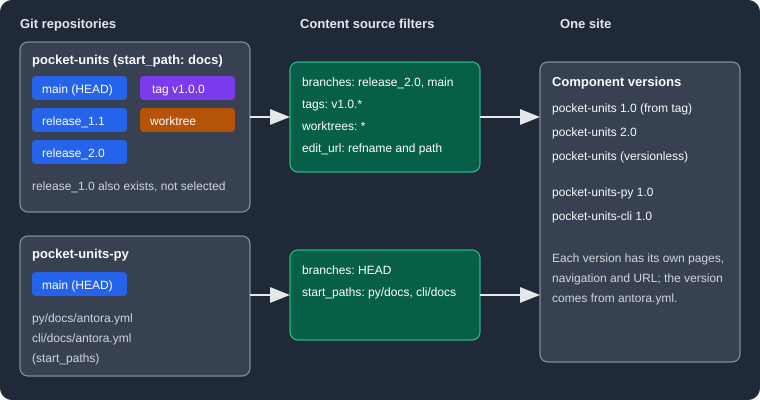

Content Sources
|
This content was generated with the assistance of AI and should be verified against the official documentation before being relied on in production. |
An Antora site is built from content sources: Git repositories (remote or local) that contain one or more content roots,
each marked by an antora.yml file. This page explains every key of a content source and how Antora turns a repository
into component versions. It was written against Antora 3.2.1 and checked on 2026-10-26. The examples use Pocket Units,
a tiny units-conversion library, documented from a repository with release_1.0, release_1.1 and release_2.0
branches, a v1.0.0 tag and its documentation in a docs folder.
What a content source is
The playbook key content.sources is a list. Each entry has a url and says which references (branches, tags,
worktrees or commits) of that repository to read, and where inside each reference the content root lives. For every
selected reference and start path Antora looks for an antora.yml, reads the component name and version from it, and
collects the files next to it. The result is a set of component versions that Antora merges into one site. The
playbook page describes the surrounding keys, and
the component version descriptor page describes
antora.yml.

The figure shows two repositories being filtered by their content sources and merged into five component versions of a
single site. A key can be set on content to change the default for every source, or on a single source to override it.
The url key
url is the only required key. It accepts remote and local locations.
-
Remote: HTTPS (
https://git-service.com/org/repo.git), SSH-style (git@git-service.com:org/repo.git) orgit://URLs. A value is treated as remote when it has a colon that is not followed by a slash or backslash, or a colon followed by://. Private repositories need a supported authentication method; see CLI, Docker, Cache and Private Repositories. -
Local: an absolute or relative filesystem path to a repository, which works even if the repository has no commits. A leading
~resolves against the home directory, a leading.against the location of the playbook file, and a leading~+or no prefix against the current working directory. -
The
ensure_git_suffixplaybook key (enabled by default) appends.gitwhere the host needs it: it is not needed on GitHub, is required on GitLab and is forbidden on Team Foundation Server and Azure DevOps.
A local repository is read from its Git object database, except for the checked out branch, which is read from the worktree (see Worktrees and HEAD).
Branches
branches selects branches by name or pattern. When it is not set, Antora uses the default filter [HEAD, v{0..9}*]:
the current branch of a local repository (or the default branch of a remote one) plus every branch whose name starts
with v followed by a digit. Setting branches on content changes that default for all sources, and a source-level
value overrides it. Patterns are case insensitive. Antora does not discover pull or merge request branches on hosted
services.
site:
title: Pocket Units Docs
content:
sources:
- url: https://github.com/example-org/pocket-units.git
start_path: docs
branches: [main, 'release_*', '!release_1.0']
ui:
bundle:
url: https://example.org/ui-bundle.zipSource: Antora docs: Select branches
The first example builds from a placeholder remote, so it was not executed. The same selection against a local clone was executed; see Running a pattern. Use these points when writing the value:
-
Quote values that start with a number or a symbol (
'2.0','*','!main'); an unquoted!or*is YAML syntax. -
branches: ~disables the branch filter, which is needed to read only tags or commits. -
HEADselects the branch currently checked out at theurl(it is an alias ofHEAD@.). -
A pattern that begins with
!removes branches matched earlier. If the first entry is a negation, Antora assumes an implied*before it, which selects every branch except the excluded ones; the documentation advises against it.
Refname patterns and brace ranges
Branch and tag values are patterns matched against the whole short name, from first to last character.
| Syntax | Meaning | Example |
|---|---|---|
|
Any number of characters. |
|
|
Alternation. An empty entry makes the segment optional. |
|
|
Numeric range, with an optional step as a third number ( |
|
|
Extended globs: zero or more, one or more, zero or one, exactly one. |
|
|
The enclosed pattern must not be present. |
|
|
Removes the matches of earlier entries. |
|
A single item in braces such as {name} is invalid and read literally, so a range or alternation needs at least two
items. The documentation recommends single quotes and the array form, and several simple inclusions and exclusions
instead of one complex expression. Brace ranges are what lets this site pick up only tagged release branches of the
projects it aggregates (for example release_1.{4..99}* in the repository playbook).
Source: Antora docs: Refname matching
Running a pattern
Against a local Pocket Units repository with the branches release_1.0, release_1.1 and release_2.0, this source
uses a brace range:
site:
title: Pocket Units Docs
content:
sources:
- url: ./repos/pocket-units
start_path: docs
branches: 'release_1.{1..99}*'
ui:
bundle:
url: ../ui/antora-ui-default/build/ui-bundle.zip
output:
dir: build/pb1Source: Antora docs: Refname matching
The generated site contained one component version, because release_1.0 falls outside the range and release_2.0
does not start with release_1.:
build/pb1/pocket-units/1.1Tags
tags has no default filter. It takes exact names, patterns and ! exclusions, and can be set on content or on a
source. Setting tags does not switch off the default branch filter; combine it with branches: ~ to read only tags.
The documentation discourages mining ordinary software release tags for documentation and suggests dedicated
documentation tags, or commits, instead.
content:
sources:
- url: ./repos/pocket-units
start_path: docs
branches: ~
tags: ['v*', '!v1.0.*']Source: Antora docs: Select tags
Executed against the local repository (tags v1.0.0 and v1.1.0), this produced only pocket-units/1.1. The version
always comes from the version key of the antora.yml found in the tag, not from the tag name.
A branch and a tag that provide the same component version collide. Selecting release_* and v* together produced
this fatal error, because both release_1.1 and tag v1.1.0 contain version: '1.1':
Duplicate nav file: modules/ROOT/nav.adoc in 1.1@pocket-units
1: docs/modules/ROOT/nav.adoc in .../pocket-units/.git (tag: v1.1.0 | start path: docs)
2: docs/modules/ROOT/nav.adoc in .../pocket-units/.git (branch: release_1.1 | start path: docs)Select either the branch or the tag for a given version, or exclude one of them.
Worktrees and HEAD
For a local repository Antora normally reads the checked out branch from the working directory, so uncommitted edits
show up in the build, and every other selected branch from the Git tree. The worktrees key controls this. Worktrees
apply to branches only, never to tags.
| Value | Meaning |
|---|---|
|
The worktree at the |
|
The main worktree only. |
|
Linked worktrees only (created with |
|
The main worktree and all linked worktrees. |
|
No worktrees: all files come from the Git tree. |
A list |
Exact names, positive and negative globs and the symbolic names above, such as |
worktrees does not choose content by itself; it only makes worktrees available, and branches decides which are
used: a worktree is read when its current branch is selected. By default Antora does not look for linked worktrees.
A linked worktree can also be the url itself, in which case branches: HEAD uses its files. To address a named
linked worktree explicitly, use HEAD@<worktree> in branches together with the worktrees key, or
HEAD@* to match several. Linked worktrees and HEAD@<worktree> are new in Antora 3.2.
Source: Antora docs: Worktrees
These runs used a repository whose main branch was checked out and a linked worktree wt-2.0 on release_2.0
containing an uncommitted line, with branches: [release_2.0, main]:
worktrees value |
Uncommitted line in the 2.0 page |
|---|---|
not set |
absent (read from the Git tree) |
|
present |
|
present |
|
absent |
The selection branches: ['HEAD@wt-2.0'] with worktrees: '*' produced the single component version pocket-units/2.0.
Start path and start paths
start_path tells Antora where the antora.yml lives relative to the repository root. Omit it when the file is at the
root. Do not add leading or trailing slashes. It is set on a source only, not on content.
start_paths registers several content roots from one reference. It accepts a single path, a comma-separated line, a
bracketed array or a YAML list. Each root needs its own antora.yml. Entries may use picomatch-style globs: wildcards
match directories only, braces need at least two entries (docs/product-{a,b}), ** is not supported, hidden
directories are skipped unless the pattern includes .*, and an entry that starts with ! excludes earlier matches
(it must come after the inclusions). start_path and start_paths are mutually exclusive, and when both are present
only start_paths is used.
content:
sources:
- url: ./repos/pocket-units-py
start_paths: [py/docs, cli/docs]Sources: Antora docs: Start path and Antora docs: Start paths
Each directory held an antora.yml with a different name; the build produced pocket-units-py/1.0 and
pocket-units-cli/1.0.
Edit links
Antora builds an "Edit this Page" URL for files in repositories hosted on GitHub, GitLab, Bitbucket or Pagure. The
edit_url key customizes or disables it, on content or on a source. The documented placeholders are {web_url}
(the repository web URL without .git), {refname}, {reftype} (branch or tag), {refhash} and {path}
(the path from the repository root, including the start path). Antora 3.2 also added a {ref} placeholder that
inserts the full ref name such as refs/heads/v4.0.x. edit_url: false or ~ disables the link, and true on a
source restores the default. For repositories that Antora does not recognize, a pattern like
'{web_url}/blob/{refname}/{path}' links to a rendered view. Private repositories show no link unless the
FORCE_SHOW_EDIT_PAGE_LINK environment variable is set.
content:
sources:
- url: ./repos/pocket-units
start_path: docs
branches: [release_1.1, release_2.0]
tags: v1.0.0
edit_url: 'https://git.example.org/{refname}/{path}'Source: Antora docs: Edit URL
The links in the generated 1.0, 1.1 and 2.0 pages were https://git.example.org/v1.0.0/docs/modules/ROOT/pages/index.adoc,
https://git.example.org/release_1.1/docs/... and https://git.example.org/release_2.0/docs/.... With the key
removed and an origin remote of https://github.com/example-org/pocket-units.git, the 1.1 page linked to
https://github.com/example-org/pocket-units/edit/release_1.1/docs/modules/ROOT/pages/index.adoc, and with
edit_url: false the link was absent. Files read from a local worktree link to their file:// location instead
(observed in a build of the checked out branch); the documentation says that setting the CI environment variable
makes the build use the edit URL, which a published site needs.
Fetch depth
For remote repositories Antora clones only the latest commit by default. The playbook key git.fetch_depth sets how
many recent commits to fetch: a positive integer, or 0 for the full history. It is a playbook-level key, new in
Antora 3.2, and applies to all sources.
git:
fetch_depth: 10
content:
sources:
- url: https://github.com/example-org/pocket-units.git
start_path: docsSource: Antora docs: Git fetch depth
This example was not executed: fetch depth only applies to remote clones and it would need a real remote. Raise the value when content comes from commits, otherwise Antora fetches one commit at a time until it finds the requested commit.
Commits
commits pins a source to exact commit hashes (a single value, or a list; abbreviated hashes are accepted up to what
Git allows). It is set on a source (the documentation also lists it as a default under content) and does not disable the default branch filter, so set
branches: ~ if only the commit should be read. Antora fetches history in batches until every commit is found,
using git.fetch_depth as the batch size, so a value above 1 is strongly recommended.
content:
sources:
- url: ./repos/pocket-units
start_path: docs
branches: ~
commits: <FULL_COMMIT_HASH_OF_RELEASE_1_0>Source: Antora docs: Commits
With the hash of the tip of release_1.0 substituted, the build produced pocket-units/1.0, so commits set on a
source works from the playbook file. The Antora documentation also describes a default commits key directly under
content, but the playbook schema of Antora 3.2.1 lists only branches, edit_url, sources, tags and worktrees
as defaults under content. Setting commits on each source is therefore the form that was confirmed here.
Submodules
Antora 3.2 can use a submodule of a locally cloned repository as a content source root. The documentation pages for
url and worktrees do not describe submodules in detail, so the following reflects a local run: a parent repository
containing the submodule libs/py (the Pocket Units Python repository). Pointing url at the submodule directory
with start_paths: [py/docs] and branches: HEAD produced pocket-units-py/1.0, and pointing url at the parent with
start_paths: [libs/py/py/docs] also produced pocket-units-py/1.0. The submodule must be initialized and checked out
locally; Antora does not clone submodules for remote sources.
Pitfalls and version notes
-
A branch and a tag providing the same component version cause a duplicate navigation file error.
-
Default
branchesincludesHEAD, so a local build reads whatever branch is checked out, including uncommitted edits. A CI checkout in detached HEAD state or of a different branch can change the site. -
Unquoted
!and*values break the YAML; quote them. -
Setting
tagsorcommitsdoes not remove the branch filter. -
Antora 3.2 added
git.fetch_depth, linked worktrees,HEAD@<worktree>, submodules as content roots, thecommitsfilter and therefplaceholder ofedit_url; 3.2 also requires Node.js 20.